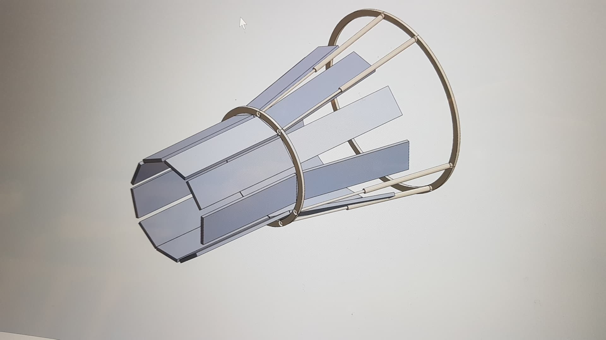
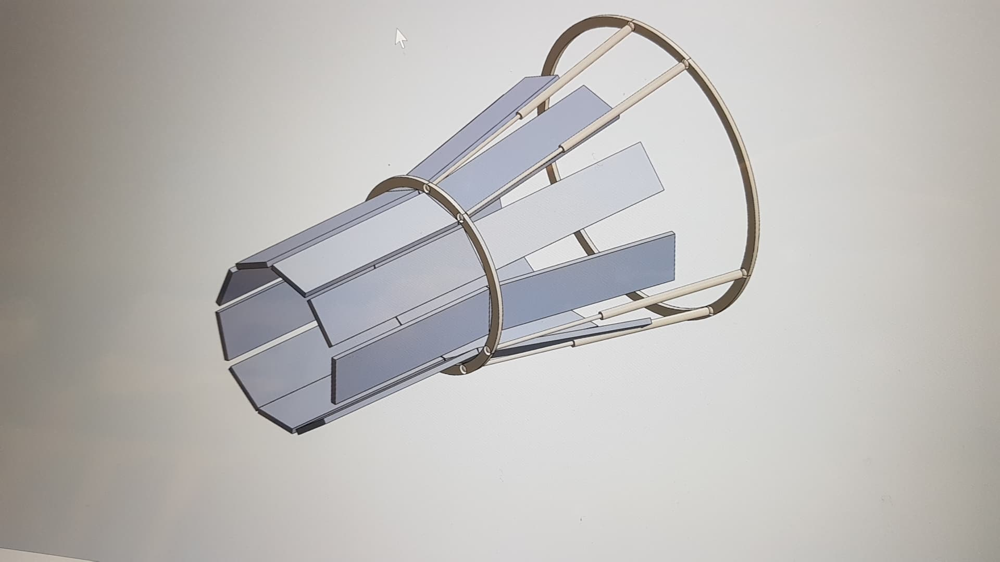

To understand complex dynamic systems, usually defined by the no. of Degree of Freedom (DOF), we studied how each joint and arm length affects the system and how we can change and produce different outputs in a system as desired. For the course project, we were to model CAD files of our system and then use matlab to simulate as well as animate the system. This project helped us to design and understand a 6-DOF system and the effectiveness of a Gough-Stewart Platform.
 
